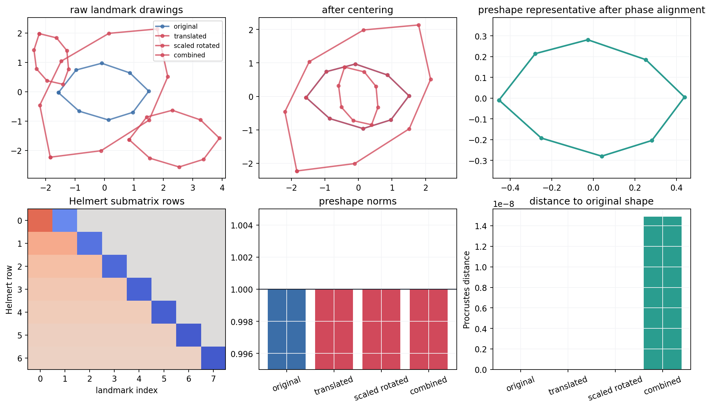
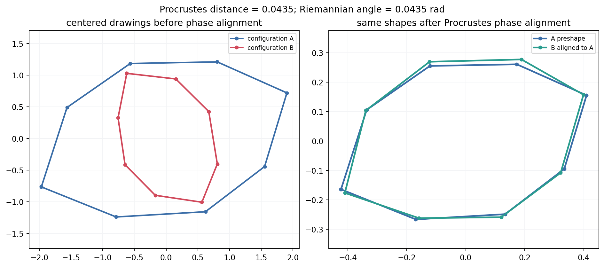
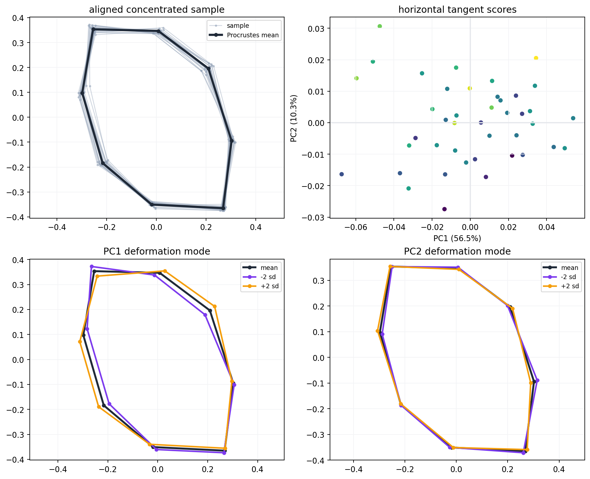
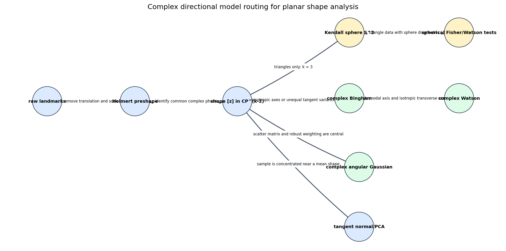

Landmark data become statistical objects only after nuisance location, scale, and rotation directions have been removed.
Landmark data become statistical objects only after nuisance location, scale, and rotation directions have been removed.
The chapter's statistical question is always paired with a geometric question: which transformations should leave the answer unchanged?
A landmark configuration with \(k\) planar points is stored as \(z_0=(x_1+iy_1,\ldots,x_k+iy_k)\in\mathbb{C}^k\).
Translation, scale, and rotation may be nuisance transformations; landmark relabeling is not removed unless the scientific design says it should be.

The Helmert submatrix \(H\) has orthonormal rows and satisfies \(H\mathbf{1}=0\), so common translations vanish.
Helmert orthogonality error is approximately \(4.23\times 10^{-16}\), and the base preshape norm is \(1.0\).
For \(k\) planar landmarks, preshapes lie on a complex unit sphere and shapes live in \(\mathbb{CP}^{k-2}\).
A valid shape statistic must be unchanged by common phase multiplication of every preshape representative.

The optimal common phase makes \(\langle z_1,e^{i\theta}z_2\rangle\) real and nonnegative.
Choose a shape class \([m]\) that minimizes total squared Procrustes distance to the sample.
Align each preshape to the current mean representative, average the aligned preshapes, renormalize, and repeat.
Common phase multiplication leaves all three coordinates unchanged, so the map belongs to shape space rather than pose space.
Flat triangles land on the equator; mirror-image triangles cross hemispheres; equilateral shapes sit near opposite poles.
Align each preshape to the mean, take a logarithmic residual, then remove the vertical phase direction.
Use tangent coordinates only when the sample cloud is concentrated enough that curvature is a small local effect.

Principal directions should alter the landmark geometry itself: bending, elongation, or local bulging, not a pose transformation.
The notebook hides each synthetic shape under random translations, scales, and rotations before recovering deformation modes.

Use the Kendall sphere and spherical directional tools when \(k=3\).
Use phase-invariant families on \(\mathbb{CP}^{k-2}\): complex Bingham, complex Watson, and complex angular Gaussian models.
Tangent normal models are useful for tight clouds, but they are not global distributions on shape space.
If a conclusion changes after translating, scaling, or rotating the drawings independently, it was measuring pose, not shape.
| Invariant | Notebook Evidence |
|---|---|
| Helmert rows remove translation | \(H\mathbf{1}\) error about \(2.00\times 10^{-16}\) |
| Preshapes have unit norm | base preshape norm \(=1.0\) |
| Hopf coordinates ignore phase | phase invariance error about \(2.54\times 10^{-16}\) |
| Tangent vectors are horizontal | max orthogonality about \(2.95\times 10^{-16}\) |
Six concept-named artifacts are present: pipeline, Procrustes overlay, Kendall sphere, tangent PCA, model routing PNG, and model routing JSON.
Comparing raw coordinate arrays lets translation, scale, or drawing angle drive the answer.
Averaging preshapes without phase alignment blurs rotations into false deformation.
A tangent plane is local. Spread-out shape samples need global shape-space methods.
A complex directional model must respect the phase quotient or it models representatives rather than shapes.
| Step | Geometry Question |
|---|---|
| Register landmarks | Are corresponding landmarks scientifically comparable? |
| Construct preshapes | Have translation and scale been removed? |
| Work with \([z]\) | Does the statistic ignore the common phase? |
| Choose summaries | Is the sample concentrated enough for tangent coordinates? |
| Select a model | Does the density live on the same quotient space as the data? |
Landmarks \(\rightarrow\) centered Helmert coordinates \(\rightarrow\) preshapes \(\rightarrow\) phase orbits \(\rightarrow\) shape-space statistics.
Procrustes distances and means use phase-invariant inner products; tangent PCA uses local horizontal coordinates.
Sphere, complex projective, and tangent models are not interchangeable; each assumes a different sample space.